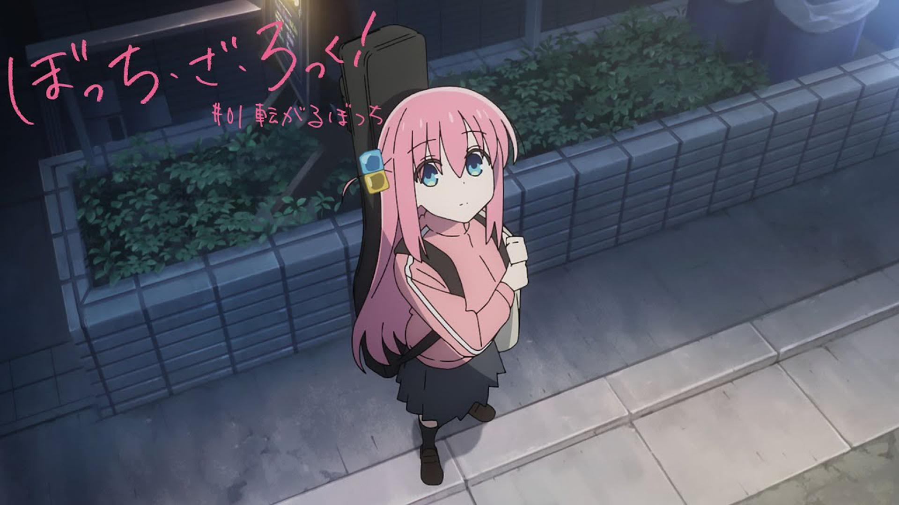

Postado dia 07 de Marco de 2023

Boku no hero esta dando o que falar em sua nova temporada. O anime esta adaptando os capitulos do manga que abordam a saga do dark Deku.
Apos os acontecimentos do ultimo arco, Midoriya decidiu sair da U.A para nao envolver os seus amigos ainda mais no confronto contra all for one, ao qual ele esta destinado a enfrentar...
Leia a materia completaPostado dia 05 de Marco de 2023
Dos ultimos anos, 2022 foi o que teve mais expectativas de ter varios animes bons, principalmente pela recuperacao pos-pandemia ja ser evidente ate tal ano, mas muitos animes que vieram nesse ano decepcionaram muitos telespectadores, como o caso de chainsaw man e Blue Lock
Mas o reverso tambem ocorreu, animes que ninguem esperava nada e entregaram tudo. Um Deles era Bocchi the rock...
Leia a materia completaDeku ira lutar contra a classe 1-A no proximo episodio de Boku no Hero Academia
Bocchi The Rock - A grande surpresa de 2022